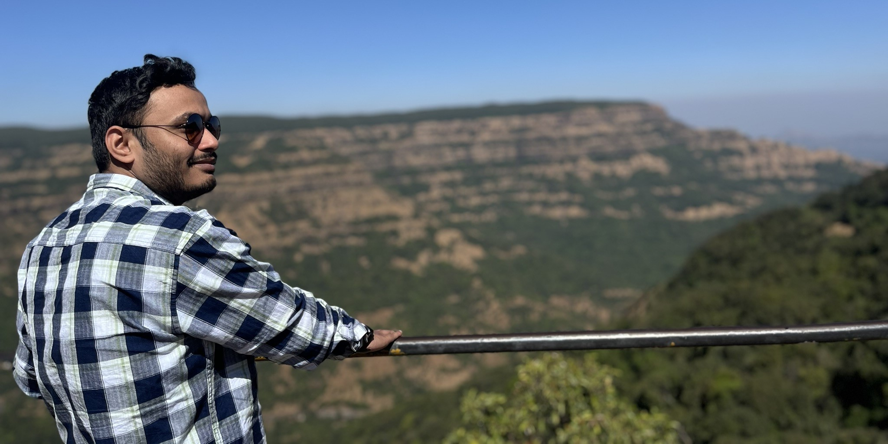

Atmospheric Science Researcher
Subhrajit Rath
Bridging molecular spectroscopy and atmospheric modeling. Specializing in Radiation Modeling, HITRAN data curation, NWP, and cloud microphysics.
Bridging molecular spectroscopy and atmospheric modeling. Specializing in Radiation Modeling, HITRAN data curation, NWP, and cloud microphysics.

Location
Pune, India
As a researcher, I specialize in curating and processing HITRAN molecular spectroscopic data for accurate integration into radiation transfer models. This involves meticulous cleaning, organization, formatting, and validation of line-by-line parameters to support high-fidelity simulations in atmospheric and climate science.
Bridging molecular spectroscopy and atmospheric modeling to improve predictive accuracy in weather and climate systems.
Proficient in Fortran, I develop advanced numerical methods and algorithms to solve infrared radiative transfer equations. My work also explores key relationships between meteorological variables (temperature, humidity, wind shear) and cloud microphysical processes, improving predictive accuracy in NWP and remote sensing applications.
I implement the advective diffusion equation using finite difference, finite element, and spectral methods for modeling substance transport in fluids. My technical toolkit includes Fortran, Python, MATLAB, and radiation models such as MODTRAN and ARTS, with experience across Linux and Windows environments.
Access weather tools, satellite data, research publications, and career resources.
Interactive weather cards, charts, and heatmaps for real-time meteorological data visualization.
Access live satellite imagery from MOSDAC/ISRO and GIBS/NASA platforms.
Research papers and publications in atmospheric science and radiation modeling.
Curated job listings from AMS, EGU, UCAR, IITM, and other meteorological organizations.
Interested in collaboration, research opportunities, or have questions about atmospheric science? I'd love to hear from you.